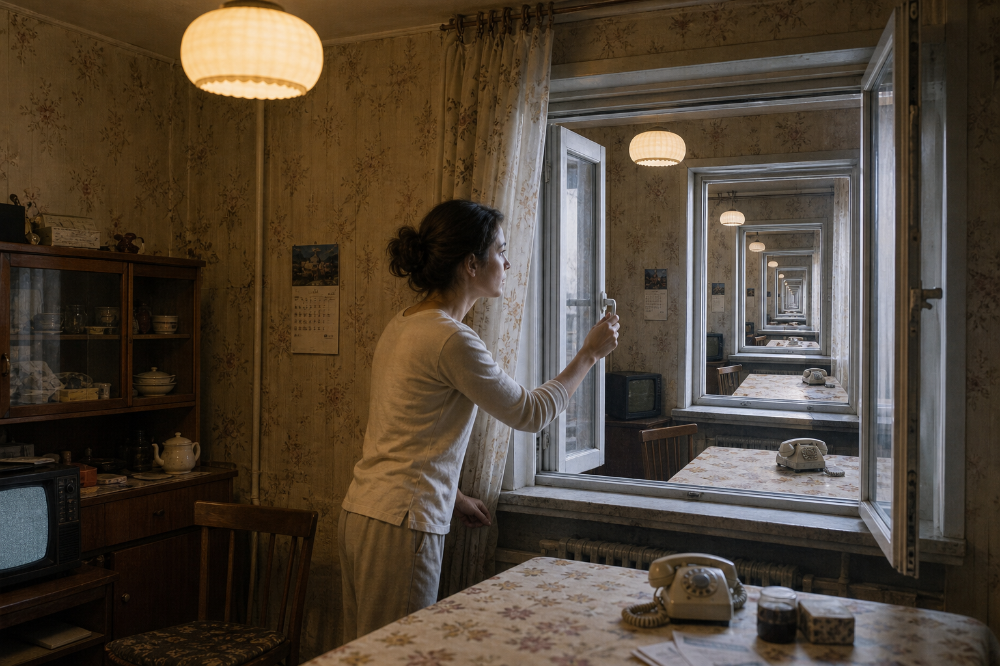
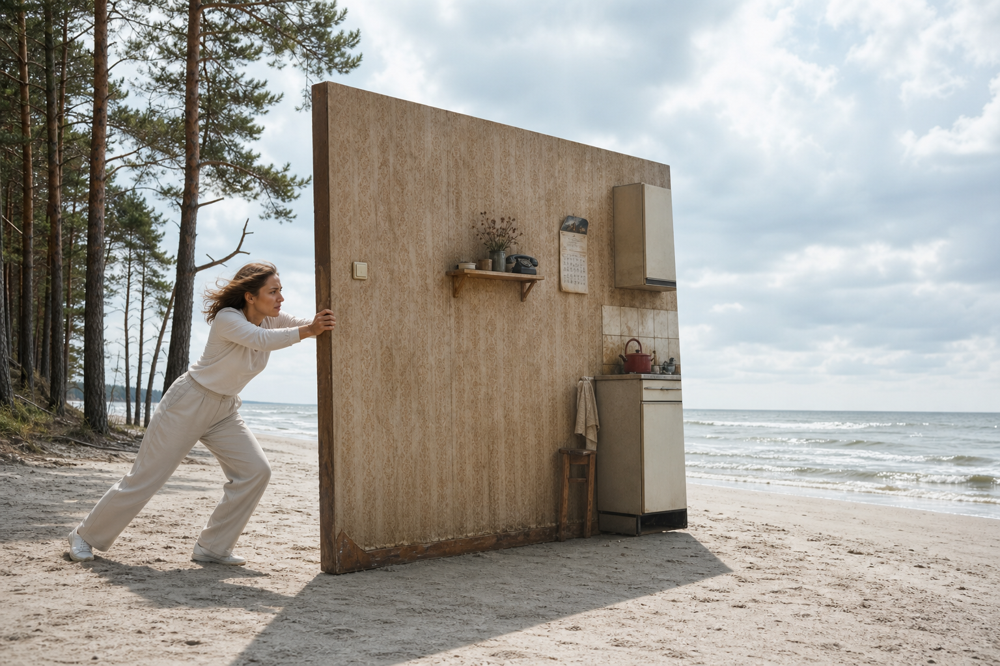
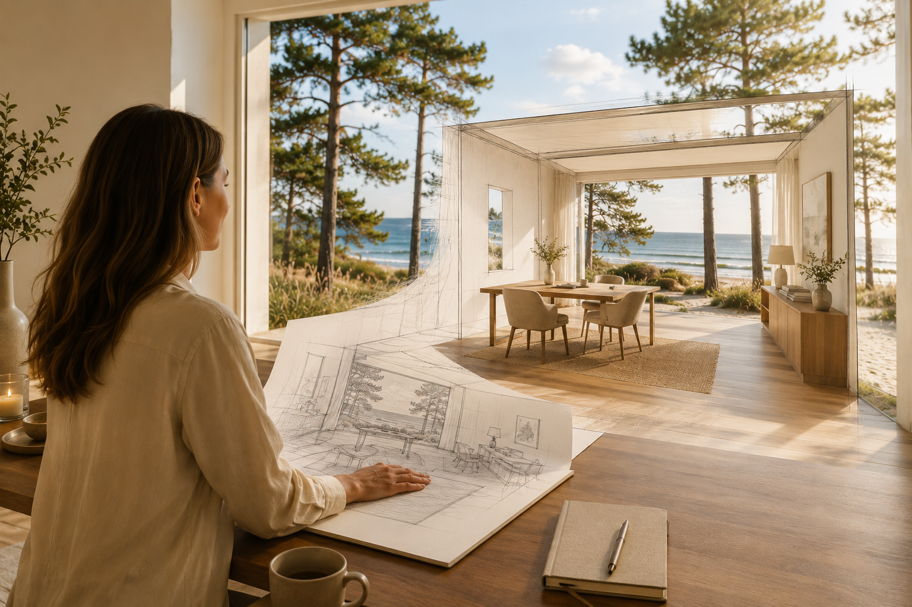
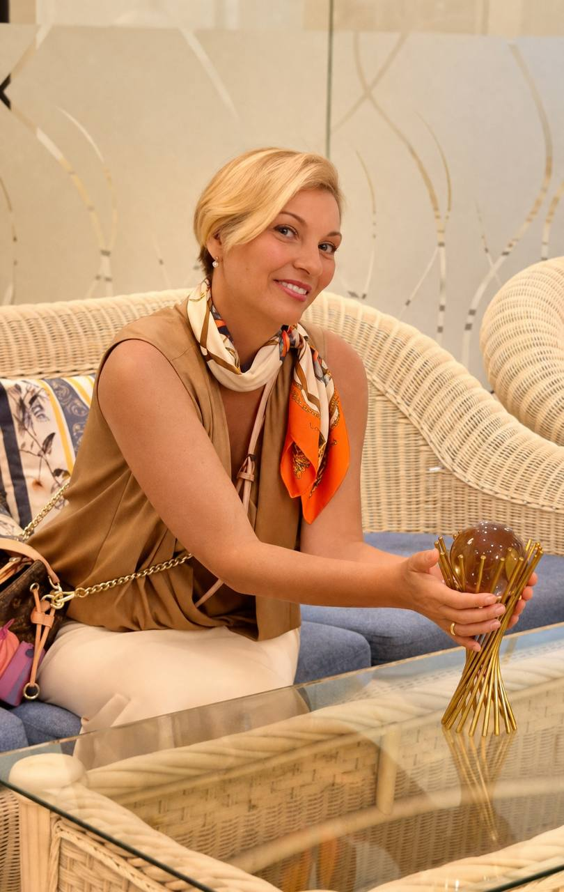
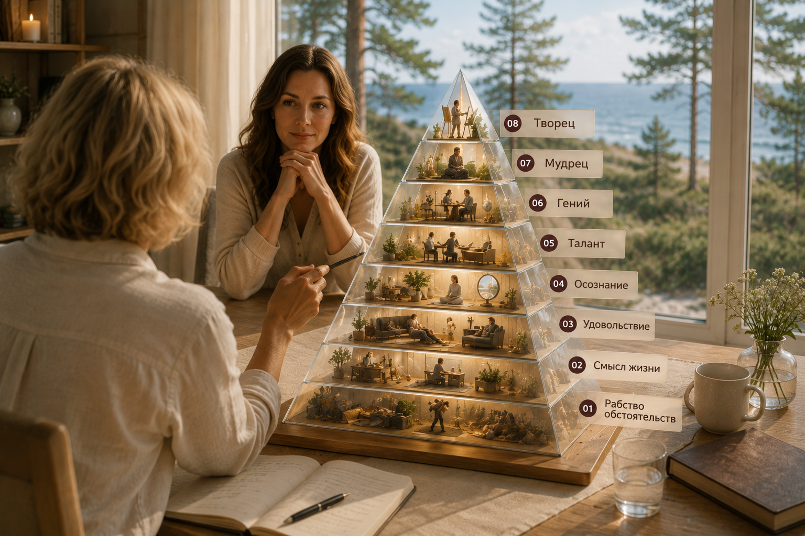
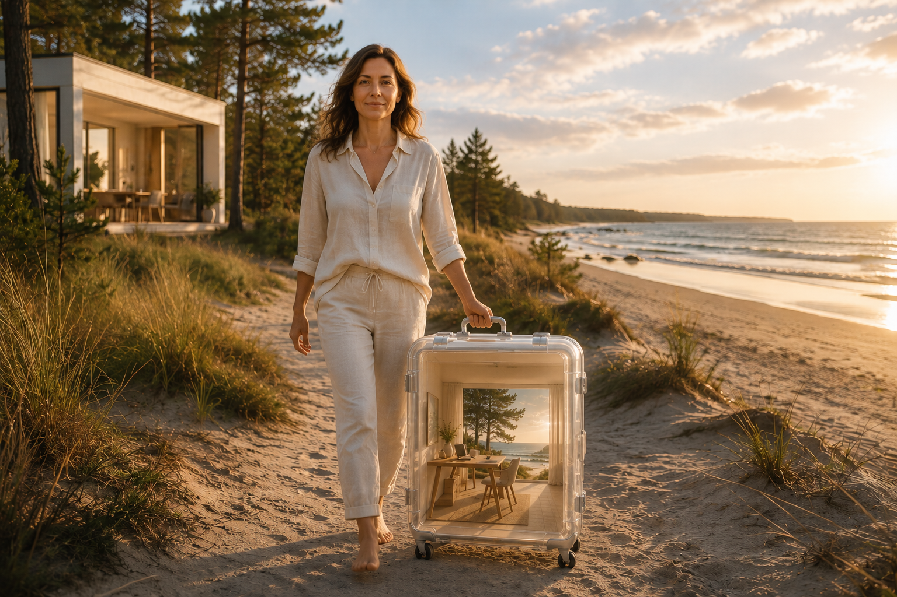

индивидуальный офлайн-формат
Индивидуальный ретрит
Два дня сфокусированной индивидуальной работы со Светланой, чтобы пройти важный переход целиком.

поддержки
что это такое
Выйти из прежнего ритма и пройти переход целиком
Индивидуальный ретрит — это очная работа один на один со Светланой для одного созревшего жизненного перехода.
На два дня вы выходите из привычной среды, чтобы увидеть задачу целиком и собрать решение, которое можно перенести в жизнь.
Почему не дома
Дела, люди, телефон и обязанности быстро возвращают человека в прежний ритм. Важный переход редко проходит “между делом”.
Как проходит работа
Разговор, точные вопросы, прогулки, паузы, работа с телом, состоянием и реальными решениями.
Что это не
Не отдых. Не программа по расписанию. Не ещё одна консультация “на бегу”.
21 день поддержки
Чтобы новое решение не осталось сильным переживанием, а начало проявляться в обычной жизни.
когда нужен ретрит
Вы всё понимаете, но внутри привычной среды ничего не сдвигается.
Онлайн-встреч недостаточно: после каждой вы возвращаетесь в тот же ритм, к тем же людям и в те же обстоятельства. Они стирают сдвиг.
Задача созрела давно, и вы чувствуете: её нужно пройти одним сильным ходом, а не по кусочку в месяц.
Вам нужно пространство, где никто ничего от вас не хочет, чтобы впервые за долгое время услышать себя.
Вы хотите не разговор о переходе, а сам переход: с решениями, которые будут приняты уже там.

с чем приезжают
Четыре перехода, которым нужна тишина
Отношения
Вы давно понимаете, что в прежнем виде отношения больше не работают. Но не можете принять решение, выдержать разговор или увидеть, можно ли строить близость по-новому.
Дело и реализация
Прежний бизнес, профессия или роль больше не дают смысла. Вы знаете, что выросли из старого масштаба, но не видите, как выйти дальше, не разрушив то, что уже построено.
Жизненный выбор
Есть решение, которое вы откладываете: переезд, новый проект, смена роли в семье, выход из привычного образа жизни. Внутри слишком много шума, чужих ожиданий и страха ошибиться.
Возвращение к себе
Вы давно держите на себе слишком много: работу, семью, обязательства, ожидания других людей. И вам нужно пространство, чтобы снова услышать себя и решить, как вы хотите жить дальше.
почему офлайн
Среда удерживаетсильнее, чемкажется
Ретрит на время ослабляет влияние привычной среды.

Прежний ритм возвращает в прежнюю роль
Пока вы остаётесь среди тех же людей и обязанностей, часть вас продолжает жить по старым правилам, даже если голова уже всё решила.
Два дня вне своей системы
Без расписания, которое не ваше, без ролей, которые нужно играть, без людей, которым нужно соответствовать. В этом пространстве видно то, что дома не видно годами.
живое присутствие
Что добавляет работа в поле Светланы

Больше, чем разговор
В офлайн-ретрите работает всё: разговоры, прогулки, тело, среда и ритм дня.
Виден прежний фон
Живое присутствие помогает заметить реакции, привычки и внутренние решения, которые онлайн часто остаются незаметными.
Поле сонастраивает
Через зеркальные нейроны, телесное присутствие и прямую сонастройку вы попадаете в поле Светланы, которое много лет действует на других частотах.
Переход не растягивается
За два дня можно пройти участок, который онлайн иногда растягивается на месяцы: он проживается в живом поле и сразу переводится в решения.
процесс
Точность, глубина и перенос в жизнь
Ретрит устроен как полный цикл одного перехода.
До ретрита
Личный разговор и уточнение задачи. Определяем ваш переход и собираем маршрут ретрита.
Два дня работы один на один
До 5 часов глубокой индивидуальной работы каждый день: разговор, точные вопросы, практики, паузы, работа с телом, состоянием и реальными решениями.
21 день сопровождения
Поддерживаем перенос результата в обычную жизнь: через первые шаги, выборы и новый ритм.
ЧТО МЕНЯЕТСЯ
Новая реальность получает форму

На ретрите новый выбор переводится в конкретный план: что завершить, что начать, с кем поговорить, где изменить привычный ход и на что опираться после возвращения.
21 день сопровождения помогает провести первые шаги уже дома, чтобы результат ретрита вошёл в ежедневную практику.
Появляется первый шаг
Становится понятно, с какого действия начать движение.
Собирается маршрут
Вы видите, что сделать сначала, что завершить и где выбрать иначе.
Возвращается энергия
Уходит лишнее напряжение, появляется больше ясности и внутреннего согласия.
Новое входит в жизнь
Первые решения закрепляются в обычном ритме, а не остаются впечатлением от ретрита.
КТО ВЕДЁТ И ГДЕ ПРОХОДИТ
Светлана Страусс и пространство Юрмалы

Светлана Страусс
Светлана помогает человеку перейти из внутреннего понимания в действие, результат и новую форму жизни.
Эта работа особенно точна для людей, которые уже многого достигли, но чувствуют: следующий этап требует другой собранности в теле, решениях, отношениях, масштабе и ритме жизни.
Моя сильная сторона — увидеть точку, из которой новый выбор становится возможным, и помочь человеку пройти её в реальной жизни.
Юрмала как пространство работы
Базовая локация индивидуального ретрита — Юрмала.
Море, сосны и дистанция от обычного ритма помогают выйти из ежедневной плотности, услышать себя и увидеть переход целиком.
Другая локация возможна по предварительному согласованию.
Юрмала
Море и сосны
Очный формат
Другая локация по согласованию
Три основания работы
Метод уровней жизни
Карта текущей точки человека и перехода, который для него созрел.
Практика с 2000 года
Индивидуальная работа, обучение, ретриты и сопровождение людей в точках жизненных переходов.
Авторство
Светлана — автор метода «Персональный Код Архетипов» и книги «Малыш зовёт: Родители?»
связь с методом
Карта уровней эволюции.
Ретрит строится на Методе уровней эволюции: до начала мы определяем, на каком уровне вы находитесь, какой переход созрел, и собираем два дня вокруг именно этого перехода.
Метод здесь нужен не как теория, а как рабочая карта: что именно вы проходите, где теряется энергия и какое решение должно быть принято в этом переходе.

границы формата
Кому ретрит не подойдёт
Когда выбор ждут от другого
Ретрит помогает увидеть следующий шаг; выбрать и сделать его предстоит вам.
Когда нужен долгий маршрут
Ретрит держит один созревший переход. Для перестройки всей системы лучше другой формат сопровождения.
Когда нужна клиническая помощь
При остром состоянии, зависимости или угрозе безопасности сначала важна профильная поддержка.
Я отвечаю за точность и глубину процесса; за дальнейшие шаги — вы. Если состояние острое, важно подключить специалистов.
Вопросы
Частые вопросы
Да, но подготовка простая: до ретрита проходит личный разговор, на котором мы уточняем задачу и желаемый результат. Специальных знаний или опыта не требуется, нужна созревшая задача.
Проживание вы организуете и оплачиваете сами. При необходимости мы порекомендуем варианты рядом с местом работы. Дорога и логистика также оплачиваются отдельно.
Нет. Смысл ретрита в физическом выходе из привычной среды и живой работе. Если ваша задача решается онлайн, точнее может быть Квантовая активация.
Вы продолжаете идти по маршруту, настроенному на ретрите. Если становится ясно, что задача глубже и требует длительной работы, ретрит может стать точкой входа в персональный маршрут.
Ретрит — один концентрированный переход за два дня с закреплением. Персональный маршрут — перестройка системы жизни за 6–9 месяцев. Если сомневаетесь, что нужно вам, опишите ситуацию в заявке и получите честный ответ.
Ретрит не пытается заменить долгую работу, если она действительно нужна. За два дня мы берём один созревший переход, собираем следующий ход и закрепляем его через 21 день сопровождения. Если задача шире, Светлана предложит другой формат.
ПЕРВЫЙ ШАГ
Встреча со Светланой — €300
Перед индивидуальным ретритом можно пройти отдельную встречу со Светланой.
На этой встрече собирается ваш текущий жизненный запрос: что именно созрело к переходу, где сейчас застревает движение, какой следующий этап требует внимания и какая форма работы будет точной именно для вас.
В результате у вас появляется не просто впечатление от разговора, а собранный индивидуальный план развития: что важно завершить, куда направить внимание, какой маршрут выбрать и с какого шага начать.
Если после встречи вы решаете идти в индивидуальный ретрит или персональный маршрут 6–9 месяцев, стоимость встречи €300 засчитывается в оплату дальнейшей работы.
Собирается запрос
Становится понятно, какая задача сейчас действительно ведёт к следующему этапу жизни.
Появляется маршрут
Вы видите, какой формат работы подойдёт: ретрит, маршрут 6–9 месяцев или другой следующий шаг.
Оплата засчитывается
Если вы продолжаете работу, €300 входят в оплату ретрита или персонального маршрута.
стоимость
Два дня работы и 21 день закрепления
До начала мы фиксируем задачу, желаемый результат и формат двух дней.
Два дня индивидуальной работы и 21 день последующего сопровождения.
Дорога, проживание и дополнительная логистика оплачиваются отдельно и согласуются до ретрита.
Обсудить индивидуальный ретритследующий шаг
Обсудить индивидуальный ретрит
Если вы чувствуете, что задачу важно пройти целиком, начните с короткого личного запроса.
